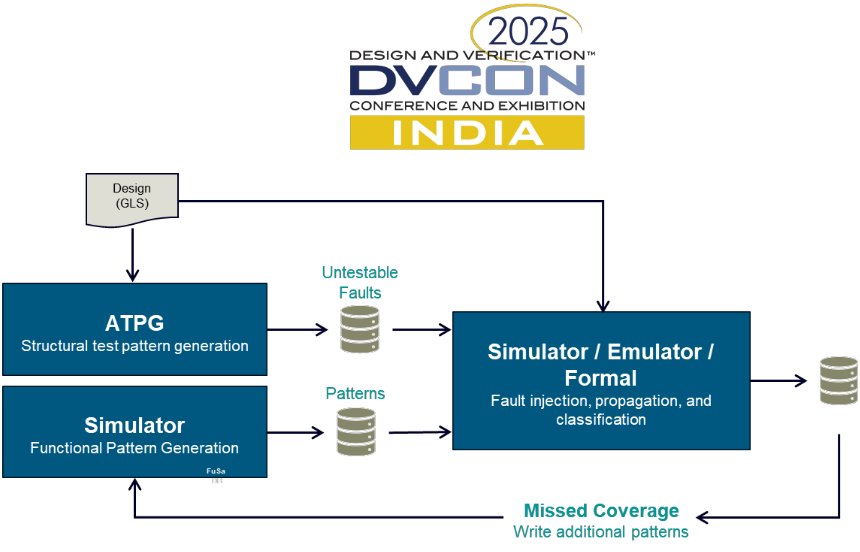
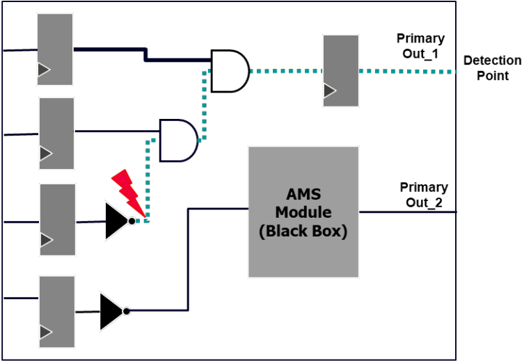
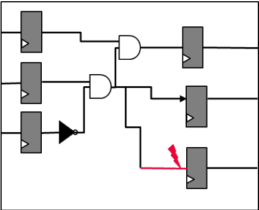
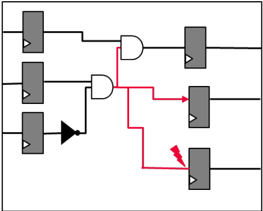
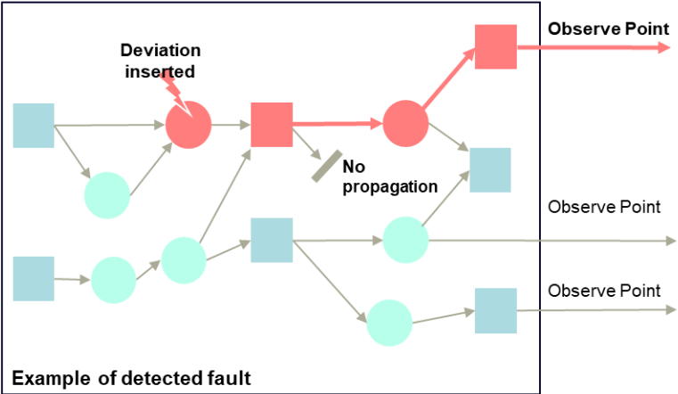
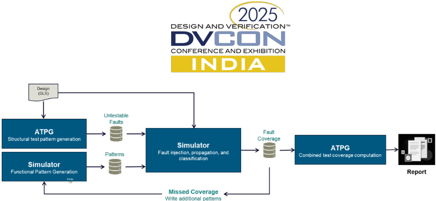
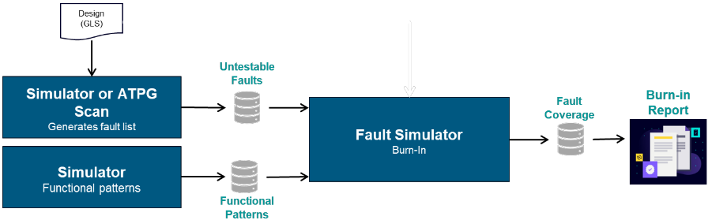
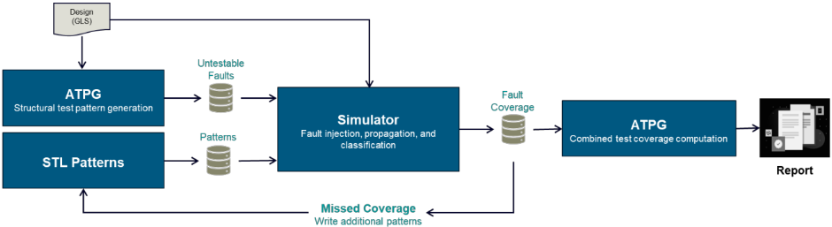
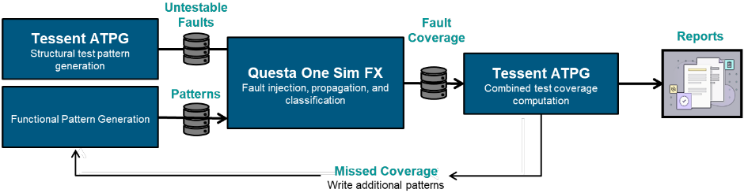

Beyond Traditional Testing: Integrating DV and DFT for Zero-Defect Goals
超越传统测试：融合 DV 与 DFT 以实现零缺陷目标
简介
论文针对汽车、数据中心、HPC等应用中超过99%测试覆盖率与零DPPM目标下，传统结构测试难以检测的顽固故障所造成的覆盖率缺口问题，提出将functional fault grading与ATPG结构测试紧密集成的统一方法。流程上，Tessent ATPG先生成stuck-at/transition等结构图形，仿真引擎产生RTL或GL功能图形，故障模拟器对剩余untestable故障执行注入、传播与观测点分析并分类，最后由ATPG工具合并结构与功能覆盖数据，形成可迭代的闭环。论文还给出formal/simulation/emulation三种故障分级手段的选型准则，强调port级注入比node级注入更贴近真实硅行为、可避免覆盖率高估，并展示burn-in与STL pattern等用例。实验采用Siemens Tessent TestKompress与Questa One Sim FX工具链，测试覆盖率提升0.94%、故障覆盖率提升0.95%，DI故障检出从62,081增至64,470。该流程支持DV与DFT并行工作，可缩短IC开发周期并提升设计质量。
问题
在99%以上测试覆盖率与零DPPM目标下，少量顽固故障（hard-to-detect faults）无法被传统结构测试覆盖，形成关键覆盖率缺口；而修改现有DFT架构来捕获这些故障通常成本高、增加硅面积并可能影响性能。论文要解决的问题是：在不新增scan逻辑或测试图形的前提下，利用已有功能验证图形补足ATPG覆盖缺口，并让DV与DFT团队从串行转为并行工作。
方法
多阶段集成流程：ATPG工具先从门级网表生成结构图形；仿真引擎产生RTL或GL功能图形；故障模拟器对剩余untestable故障做故障注入、传播分析与分类；ATPG工具最终合并结构与功能覆盖数据，若有缺口则反馈迭代生成更多功能图形。关键技术手段包括：按设计规模与资源在formal（适合中小规模控制逻辑/安全关键路径）、simulation（适合已有boot/loopback/integrity check等功能图形的场景）、emulation（适合大规模全芯片与长时功能测试）之间选型；区分port级注入（对齐真实硅可控制/可观测点）与node级注入（易高估覆盖率）；支持RTL与GL双stimulus使DV/DFT并行；fault list优化与stimulus grading；以及ATPG scan集成、burn-in故障分级、STL pattern故障分级等用例。
关键结果
测试覆盖率（test coverage）提升0.94%，故障覆盖率（fault coverage）提升0.95%，untestable故障数量减少
DI（det_implication）故障检出数从62,081增至64,470，即功能测试用例额外检出2,389个故障
Tessent与Questa One Sim FX紧密集成生成合并报告，并允许用户以新的子类名称（subclass）归入故障分级带来的覆盖
创新点
相对仅依赖结构ATPG的传统流程，论文将DV已有的功能stimulus（boot、loopback、integrity check、STL等）通过故障分级对ATPG覆盖进行'top up'，无需新增scan逻辑或测试图形即可关闭覆盖缺口；明确指出node级注入会高估覆盖率、应采用port级注入以对齐真实硅行为；并通过RTL/GL双stimulus支持使DV与DFT从串行变为并行，缩短开发周期。
团队参考意义
相关度级别：high
命中能力域：2.1 DFT/ATPG/门级验证 | 2.6 Fault simulation/Z01X/TFMEA
理由：论文核心正是团队2.6域的functional fault grading/fault injection/fault grading能力，并与2.1域的ATPG pattern generation、fault classification、coverage merge、untestable fault论证直接对应。团队服务的LPDDR/HBM4/UCie等高速IP普遍存在AMS PHY、第三方IP、scan insertion受限等论文所述的典型覆盖缺口场景；功能故障分级产出的detectability/observability数据也可为FuSa TFMEA/FMEDA的diagnostic coverage论证提供量化支撑，与2.5/2.6域的关联工作形成闭环。
建议动作：深入精读并做内部分享
中文全文
Beyond Traditional Testing: Integrating DV and DFT for Zero-Defect Goals
Jyothy Jaganathan, Jyothy.Jaganathan@Siemens.com Ann Keffer, Ann.Keffer@Siemens.com
Siemens EDA 10800 Pecan Park Blvd suite 210, Austin, TX 78750
摘要 - 当今半导体行业面临着对制造测试覆盖率前所未有的需求，测试目标超过99%，尤其是在汽车、数据中心和高性能计算系统等高风险应用领域。在这一复杂格局下，实现严格的零缺陷百万分率（DPPM）目标面临重大挑战，因为一小部分却十分重要的故障往往难以被传统测试方法检测到。这些难以检测的故障造成了关键的覆盖率缺口，仅靠常规的结构测试难以弥补，而修改现有的可测试性设计（DFT）架构以捕获这些残余故障，通常涉及高昂的成本、增加的硅面积以及潜在的性能影响。本文提出了一种将功能故障分级与传统测试方法紧密结合的解决方案。这一统一策略增强了测试覆盖率，并使设计验证（DV）团队与DFT团队能够并行工作。
I. INTRODUCTION
本文所提出的主要 DFT 方法论纳入了一种精密的多阶段流程，其中自动测试向量生成（ATPG）工具首先生成初始结构向量，随后由仿真引擎生成功能向量（来自寄存器传输级（RTL）或门级（GL）仿真）。接着，故障仿真器对剩余的不可测试故障进行故障分级，最终由 ATPG 工具将结构覆盖率数据与功能覆盖率数据合并。这种集成方法在优化测试效率的同时，确保了全面的覆盖率。
II. CHALLENGE
芯片开发者在实现高缺陷覆盖率方面面临诸多挑战，原因包括复杂的设计架构、有限的可观测性与可控性、模拟/混合信号及第三方 IP 模块的存在、扫描链插入方面的限制、功能测试与结构测试之间的差距、ATPG 工具的局限性，以及测试时间、成本与覆盖率之间的权衡。
功能故障分级通过识别在功能测试过程中被顺带检测到的故障，有助于应对实现高缺陷覆盖率的挑战，尤其是在结构 ATPG 难以奏效的领域——例如模拟/混合信号模块、第三方 IP 或可观测性受限的逻辑。它通过揭示隐藏的覆盖率缺口并提升整体故障检测能力来补充结构测试，而无需额外的扫描逻辑或测试向量。包含功能故障分级的典型流程如图 1 所示。

III. 可测试性设计（DFT）方法论需要考虑的事项
在选择 DFT 方法论时，有几个因素需要考虑。您的 ATPG 扫描工具支持哪些故障模型（故障模型类型见表 1）？您是否需要将功能故障分级作为该流程的一部分？如果是，您使用的是形式验证、基于仿真的故障注入，还是硬件仿真？故障分级主要用于补充结构扫描所达到的覆盖率，其做法是分析功能向量所提供的额外故障覆盖率，从而有效地补足 ATPG 覆盖率。
| Fault Model | Description | Use Case |
|---|---|---|
| Node stuck at 0 or 1 | Basic structural testing | Stuck-at Faults |
| Slow-to-rise or slow-to-fall | Timing-related issues | Transition Faults |
| Delay along a path exceeds limit | Performance verification | Path Delay Faults |
| Short between two nodes | Physical defect detection | Bridging Faults |
| Disconnected nets | Found in scan chains or interconnects | Open Faults |
| Faults inside standard cells | Advanced nodes, high coverage | Cell-internal Faults |
| Abnormal leakage current | Useful in low-power designs | IDDQ Faults |
| Fault Model | Description | Use Case |
| Fault Model | Description | Use Case |
|---|---|---|
| Small Delay Defects (SDD) | Subtle delay changes | Critical in deep submicron designs |
| Fault Model | Description | Use Case |
要决定故障分级是否应成为您 DFT 流程的一部分，首先应审视您的测试覆盖率目标。如果 ATPG 覆盖率未达到您的目标——通常为 99% 或更高——故障分级可以借助功能向量或基础设施（infrastructure）向量来帮助识别并弥合这些差距。
接下来，评估您的设计复杂度。诸如片上系统（SoC）、层次化架构，或包含定制 IP 或灰盒 IP 的设计，往往包含 ATPG 难以完全测试的逻辑。在这些场景中，故障分级对于验证这些较难访问的区域变得至关重要。请考虑您的验证环境中功能向量的可用性。如果您已经在运行启动序列、完整性检查、回环测试或其他系统级仿真，故障分级便可以利用这些仿真，以最小的开销提取故障覆盖率。请思考您的质量和可靠性需求。汽车、航空航天和医疗等行业通常要求超低的 DPM（Defects Per Million，每百万缺陷数）率。故障分级通过捕获 ATPG 可能遗漏的缺陷来支持这一目标。此外，还要将您的工具和资源纳入考量。如果您拥有可用的故障仿真工具，以及能够高效运行这些工具的计算能力，那么集成故障分级就更为切实可行。最后，回顾您的流片历史。如果以往的芯片曾出现故障逃逸，或 ATPG 覆盖率与实际缺陷检出之间相关性较差，故障分级可以帮助弥合这一差距，并提升未来的测试有效性。参见表 2 中的检查清单，它可以帮助您确定是否需要将故障分级作为 DFT 方法论的一部分。
| Question | If Yes → Consider Fault Grading |
|---|---|
| Is ATPG coverage below target? | |
| Are functional patterns already available? | |
| Is the design complex or hierarchical? | |
| Are you targeting low DPM or high quality? | |
| Do you have scan-excluded or graybox IPs? | |
| Are you seeing fault escapes in silicon? |
| Question | If Yes → Consider Fault Grading |
III. CHOOSING THE RIGHT TOOLS FOR FAULT GRADING
在故障分级中，选择形式验证、仿真还是硬件仿真（emulation），取决于设计规模、测试目标和可用资源。形式故障分级最适合中小规模的模块，尤其是在验证控制逻辑或安全关键路径时。它无需测试向量即可进行穷尽分析，并能从数学上证明故障是始终被检出还是从未被激活。然而，它难以扩展到大型设计，且适用范围有限。
当功能向量——例如启动测试、回环测试或完整性检查——已经成为验证流程的一部分时，基于仿真的故障分级是理想选择。它能够利用实际激励实现真实的故障激活与观测，因此对于分析非捕获向量（non-capture pattern）和灰盒 IP（graybox IP）非常有效。虽然它具有灵活性且对故障模型的支持良好，但对于大型设计或庞大的向量集而言可能十分耗时。
基于硬件仿真的故障分级是大规模设计或难以仿真的长时间运行功能测试的首选方法。它可在实时或近实时环境中提供高速故障分析，因此适合系统级验证和软件驱动的测试。尽管它需要专用基础设施和更复杂的设置，但它能显著加速全芯片场景下的故障分级。表 3 提供了用于确定最佳故障分级方法/工具类型的汇总。
| Method | Best For | Scale | Speed | Setup Complexity |
|---|---|---|---|---|
| Small blocks, control logic | Low | Fast | Low | Formal |
| Functional pattern analysis | Medium | Moderate | Moderate | Simulation |
| Full-chip, long tests | High | Fast | High | Emulation |
| Method | Best For | Scale | Speed | Setup Complexity |

III. CHOOSING THE RIGHT SIMULATOR FOR FAULT GRADING
在选择故障仿真器时，必须考虑若干能够显著提高成功几率的关键能力。仿真器应足够灵活，能够与各种测试平台（testbench）类型协同工作，无论您使用的是原生 Verilog/SystemVerilog 还是基于 UVM 的测试平台，并且应支持多种输入波形文件格式，以便轻松集成到您现有的工作流程中。
能够灵活地从寄存器传输级（RTL）仿真或门级（GL）仿真中选择激励，提高了找到合适类型激励的几率。最后，支持分布式计算框架、能够同时处理多个故障场景的仿真器也十分重要，因为随着测试需求的增长，这将是保持效率的关键。
利用 RTL 和 GL 激励文件执行故障分级的能力，使 DV 团队和 DFT 团队能够并行工作，从而显著加快 IC 开发。DFT 工程师无需等待 GL 模型，便可利用 RTL 激励尽早开展故障分析，而 DV 工程师则可以继续进行功能验证。通过将传统上按顺序执行的活动重叠开展，团队能够更早地发现并解决功能问题和可测试性问题，最终缩短整体 IC 开发周期并提升设计质量。
当 DV 工程师完成各自的验证周期并实现代码覆盖率收敛后，便可针对特定故障列表执行激励分级。仿真器通过验证故障的可控性与可观测性、确定最佳故障注入时机，并追踪故障在设计结构中的传播，来执行全面分析。仿真器监测故障向观测点的传播，并按特定类别对故障进行分类。
该框架/方法学应支持广泛的故障类型，从基本的固定型（stuck-at）故障到更复杂的时序延迟故障以及单元感知（cell-aware）的用户自定义故障模型。在为 DFT 确定合适的故障模型时，必须考虑设计特性。合适的故障模型取决于与设计、工艺节点和测试目标相关的若干因素。需要考虑的一些设计特性包括：
IIII. FAULT GRADING OVERVIEW
故障分级（fault grading）是指将故障注入到寄存器传输级（RTL）或门级设计中，并观察这些故障是否会传播到原始输出或其他可观测点。这一过程有助于量化功能向量所提供的故障覆盖率，而功能向量通常是为设计验证而非制造测试而创建的。例如，在图 2 所示的原理图中，一个故障（用红色箭头表示）被注入到非门和与门之间的信号线上，用于模拟 stuck-at-0 或 stuck-at-1 等条件。青色虚线展示了故障效应如何穿过逻辑并到达 Primary Out_1 处的检测点。一个故障要被认为是可检测的，必须既被激活，又被传播到可观测点。
图中以黑盒形式表示的模拟/混合信号（AMS）模块的存在带来了一个挑战。由于 AMS 模块无法使用数字自动测试向量生成（ATPG）工具直接进行控制或观测，因此必须通过周围的数字逻辑或采用专门的混合信号测试策略来确保覆盖率。在这种背景下，功能故障分级通过识别那些被功能向量顺带覆盖的故障，对结构化 ATPG 形成补充，有助于弥补覆盖率缺口。

这种方法具有双重好处：它将现有的功能验证向量用于制造测试目的，并突出显示设计中尚未被测试的部分。

本幻灯片重点展示了我们在为故障分级而进行故障仿真时的一个关键区别：端口级注入与节点级注入。
在如何为故障分级而进行故障仿真方面，存在一个关键区别：端口级注入与节点级注入。让我们从图 3 所示的端口故障注入开始。在这里，故障被注入到模块端口处，这与真实的硅片行为高度吻合，因为端口级信号正是实际测试硬件能够控制和观测的对象。在此图中，红色箭头表示注入在逻辑块输出端口处的故障。由于这是设计层次结构中的一个可见点，因此系统级测试能够检测到它，这反映了一个真实的故障检测场景。


图 4 所示的节点故障注入是许多仿真器的默认模式。在这里，故障被任意注入到内部节点（即模块内部的连线）上，通常位于模块端口边界之下。问题在于，这些内部节点在系统级可能无法被控制或观测。因此，仿真可能表明某个故障是可检测的，但实际上硅片中并不存在能够激活或观测该故障的测试路径。这会导致故障覆盖率被高估。换言之，节点注入可能导致误导性的故障分级结果，因为它包含了功能向量或基于扫描的向量实际上无法到达的故障位置。

在故障分级的背景下，仿真器的主要职责是评估故障被注入并传播到设计中时的可控性与可观测性。仿真器利用所提供的一组功能向量，在黄金仿真中识别出可插入故障且可引发偏差的时间步。一旦识别到这样的时间步，便注入故障，由仿真引擎接管。仿真引擎使故障在设计结构中传播，并持续对照黄金参考评估偏差。它监测故障是否传播到观测点，若故障到达观测点，则认为该故障被该向量检测到（见图 5）。
该过程会在整个故障列表上重复进行，最终提供一份故障分类报告。
An example of classification terminology is:
分类术语的一个示例如下：


V. FAULT GRADING USE CASES
故障分级有若干用例。故障分级与自动测试向量生成（ATPG）扫描集成的典型用例如下方图 6 所示。ATPG 扫描工具基于门级网表（GLS）生成结构测试向量。这些向量可针对固定型故障、转换故障以及其他结构故障模型。
随后，这些向量与仿真器生成的功能向量一同被送入故障仿真器，由其执行功能故障分级，其中包括故障注入、传播分析和故障分类。
由此生成一份全面的缺陷覆盖率报告，量化功能向量对建模故障的检测效果。

下一个用例展示了专为老化（burn-in）应用定制的故障分级流程。ATPG 扫描工具或仿真器生成固定型（SA）故障列表。该列表定义了老化期间待评估的故障全集，并代表老化评估期间所针对的潜在缺陷。与此同时，功能仿真器生成逼真的功能向量，以模拟老化期间的系统级活动。这些向量可以来自现有的设计验证测试平台，代表老化过程中的真实工作条件（见图 7）。

本用例概述了如何利用软件测试库（STL）向量来提升数字设计测试中的故障覆盖率。
该流程从门级设计（GLS）开始，使用 ATPG 扫描对其进行分析以生成故障列表。在此分析过程中，无法用结构向量激活或观测的故障会被标记为不可测试。随后使用 STL 向量来针对这些故障；STL 向量是软件驱动的功能序列，旨在以结构 ATPG 无法做到的方式对设计进行激励。STL 向量通常在软件或固件层面开发，常用于嵌入式环境中的系统内测试。
接下来，使用故障仿真器对 STL 向量进行仿真，并在仿真过程中执行故障注入、传播和分类。该仿真确定在 STL 激励下哪些故障被激活并被观测到。随后将故障分类为已覆盖、未覆盖或仍不可测试。
故障仿真器与 ATPG 扫描工具之间的集成使 STL 向量能够以与结构测试同等的严格程度进行评估，确保不会遗漏软件级测试与基于扫描的测试之间的任何重叠部分。
通过弥补 ATPG 遗留的覆盖缺口，尤其是针对那些仅在软件执行期间才会被激励的复杂逻辑或系统级交互，该方法显著提升了整体测试质量（见图 8）。


1. Stimulus grading and fault list refinement.
激励评估（stimulus grading）是指在故障仿真期间，评估一组输入向量在数字设计内激活并传播故障的有效程度的过程。它通过判定这些激励能否敏化故障并将其驱动至原始输出或扫描单元等可观测点，来衡量激励的质量。该技术之所以重要，是因为它有助于量化功能向量所实现的故障覆盖率、识别设计中未经测试的区域，并提高测试向量的整体有效性。激励评估还通过验证来自软件驱动测试或系统级测试的覆盖率来支持混合模式测试，并在提升测试质量方面发挥着关键作用。
2. Fault list optimization
可测试性设计（DFT）中的故障列表优化是指对自动测试向量生成（ATPG）或故障仿真期间生成的故障列表进行精炼的过程，以便聚焦于那些有意义的、可测试的且与设计和制造目标相关的故障。这一过程涉及滤除冗余的、不可测试的或影响较低的故障，并对那些对覆盖率和质量指标贡献最大的故障进行优先级排序。
这一过程之所以有价值，是因为它提高了测试流程的效率和有效性。通过减少需要仿真或作为目标的故障数量，它降低了仿真时间和计算开销。它还有助于将测试资源集中在更可能在硅片中实际出现的故障上，从而提高缺陷检测能力并减少误报。此外，故障列表优化还支持更好的故障分类，提高了故障分级的准确性，并有助于用更少的测试图形实现更高的故障覆盖率。
VII. EXPERIMENT
实验所采用的方法基于 Siemens 的集成工具链，结合了 Tessent TestKompress、Questa One Sim 和 Questa One Sim FX。该流程如图 9 所示。
该流程概述如下：

Tessent ATPG 首先从门级网表（GLS）生成结构测试图形，针对固定型故障（stuck-at）和转换故障（transition）等故障模型。这些结构图形与 Questa OneSim 生成的功能图形一起被传递给 Questa OneSim FX 进行功能故障分级。在此步骤中，故障被注入设计中，并对其传播性和可观测性进行分析和分类。
Questa OneSim FX 生成一份缺陷覆盖率报告，量化功能图形检测建模故障的有效程度。该报告随后与来自 Tessent ATPG 的结构覆盖率数据合并，从而提供总故障覆盖率的全面视图。如果发现覆盖率缺口，反馈回路使工程师能够在 Questa OneSim FX 中改进或生成额外的功能图形，迭代地提升整体覆盖率。
功能故障分级对于补充 ATPG 扫描测试结果尤为有价值，特别是在不适合基于扫描的测试的逻辑中。被 ATPG 标记为不可测试的故障，通过使用 Questa FX 在真实激励下进行验证，以确定其是否在功能上可测试。这种闭环流程提供了更准确的缺陷覆盖率度量。
VIII. RESULTS
表4展示了 Tessent ATPG 扫描工具的统计报告与 Questa One Sim FX 的功能故障分级结果相结合的情况。该报告显示测试覆盖率提升了 0.94%，故障覆盖率提升了 0.95%，同时不可测试故障的数量有所减少。Tessent 与 Questa One Sim FX 紧密集成，可生成合并报告，甚至为用户提供了灵活性，可以用新的子类名称将故障分级得到的故障覆盖率归入特定类别。在本例中，测试覆盖率的提升得益于 DI（det_implication）故障检测数量的增加，从 62,081 上升到 64,470——即使用功能测试用例额外检测出 2,389 个故障。
| Fault Classes. | Result after ATPG run only.#faults(total) | Result after ATPG run only.#faults(total relevant) | Results after merging the ATPG and functional fault grading results.#faults(total) | Results after merging the ATPG and functional fault grading results.#faults(total relevant) |
|---|---|---|---|---|
| FU (full) | 298702 | 294271 | 298702 | 297332 |
| UC (uncontrolled) | 81 ( 0.03%) | same ( 0.03%) | 40 ( 0.01%) | same ( 0.01%) |
| UO (unobserved) | 19 ( 0.01%) | same ( 0.01%) | 17 ( 0.01%) | same ( 0.01%) |
| DS (det_simulation) | 224897 (75.29%) | same (76.43%) | 224897 (75.29%) | same (75.64%) |
| DI (det_implication) | 62081 (20.78%) | same (21.10%) | 64470 (21.58%) | same (21.68%) |
| Fault Classes. | Result after ATPG run only.#faults(total) | Result after ATPG run only.#faults(total relevant) | Results after merging the ATPG and functional fault grading results.#faults(total) | Results after merging the ATPG and functional fault grading results.#faults(total relevant) |
| 0 | 1 | 2 | 3 | 4 |
|---|---|---|---|---|
| PU (posdet_untestable) | 5 ( 0.00%) | same ( 0.00%) | 4 ( 0.00%) | same ( 0.00%) |
| UU (unused) | 4004 ( 1.34%) | same ( 1.36%) | 3931 ( 1.32%) | same ( 1.32%) |
| TI (tied) | 368 ( 0.12%) | same ( 0.13%) | 365 ( 0.12%) | same ( 0.12%) |
| BL (blocked) | 82 ( 0.03%) | same ( 0.03%) | 74 ( 0.02%) | same ( 0.02%) |
| RE (redundant) | 1348 ( 0.45%) | same ( 0.46%) | 1348 ( 0.45%) | same ( 0.45%) |
| AU (atpg_untestable) | 5817 ( 1.95%) | 1386 ( 0.47%) | 2638 ( 0.88%) | 1268 ( 0.43%) |
| test_coverage | 97.98% | 99.48% | 98.92% | 99.39% |
| fault_coverage | 96.08% | 97.52% | 97.03% | 97.48% |
| 0 | 1 | 2 | 3 | 4 |
VIIII. CONCLUSION
Fault grading is a critical component of DFT as it directly measures test quality through fault coverage, identifies gaps in test patterns, and guides improvements in scan architecture and logic design. By enhancing fault detection capabilities, it supports higher product reliability and yield, ultimately ensuring robust and efficient manufacturing outcomes .